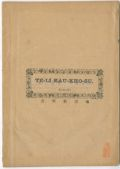
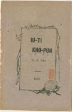
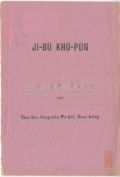
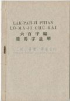
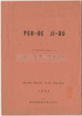
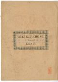
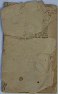
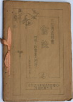

Languages
台文
｜
中文
｜
日本語
｜
English
字體
小
｜
中
｜
大
首頁
/
白話字數位典藏
白話字數位典藏全文檢索
查詢模式
選擇年代
清國時代(1885-1895)
日本時代(1895-1945)
戰後(1945-1969)
1885-1895
1896-1905
1906-1915
1916-1925
1926-1935
1936-1945
1946-1955
1956-1965
1966-1969
1970-1980
1980-1990
1990-2000
2000-2010
2010-
選擇文類
詩
散文
小說
戲劇
傳記
選擇作者
陳清忠
陳清義
編輯部
柯設偕
吳天命
明有德
偕叡廉
周天來
劉華義
王守勇
林茂生
陳添旺
柯維思
王占魁
賴仁聲
陳瓊琚
雪峰逸嵐
吳清鎰
郭水龍
蕭樂善
許水露
葉金木
陳金然
章王由
廖得
鄭連坤
潘道榮
楊士養
梁秀德
劉約翰
周淑慧
高金聲
林燕臣
黃六點
蔡愛義
許有才
主筆
巴克禮
郭朝成
陳鳩水
張基全
陳明清
陳能通
拾穗生
顏振聲
卓恆利
傳道局
胡文池
劉主安
鄭兒玉
Google Search
Yahoo Search
全部
刊名
標題
標題(教羅)
全文
全文(教羅)
作者
第1頁，共53頁(共1,058筆資料) 0.6933650970459sec
1
2
3
4
5
...
53
To Page
GO
文字列表
圖文列表
排序
日期
文類
刊名
作者
影像

[不詳 台大楊雲萍文庫白話字史料(編修) 文類-選擇文類 作者--/-]
(15)
地理教科書卷三 [ Tē-lí Kàu-kho-su Koàn-saⁿ ]
...
[不詳 台大楊雲萍文庫白話字史料(編修) 文類-選擇文類 作者--/-]
(7)
地理教科書卷四 [ Tē-lí Kàu-kho-su Koàn-sì ]
...
[1915-2 台灣教會報 文類-選擇文類 作者--/-]
羅得 [ Lô-tek ]
羅得 1915.2，no.359，pp.1-2 在早A-pek-lia̍p-hán出外去到迦南地，彼時伊有chhoā伊的姪仔羅得佮伊去。後來in兩人真好額，有牛，羊，駱駝，真濟；致到in袂得通相佮徛起，因為in 的牧者常常冤家，驚了會致到連累著in 的主人。所以議論著相離；A-pek-lia̍p-hán 讓羅得揀看見約旦河邊的平洋是真好趁錢的所在，土地真肥，土產真濟；就去蹛佇所多瑪城。佇遐生查某囝，來匹配世俗的囝婿。 可惜所多瑪人的風俗真歹，oh得講到明。羅得愛去蹛佇彼號的所在是顯明伊貪財較過頭；無親像A-pek-lia̍p-hán甘願蹛佇山--ni̍h較偏僻的所在，專心服事上帝。羅得本...
[1915-10 台灣教會報 文類-選擇文類 作者--/-]
著找真的歡喜 [ Tio̍h Chhē Chinê Hoaⁿ-hí ]
著揣真的歡喜。 1915.10，no.367，pp.5-7 咱人佇這世間攏有要緊一个目的，就是兩字歡喜，因為人若無歡喜，做人就真無價值，所以歡喜是逐人所愛。無論是上中下等，男女老幼無毋日日揣歡喜，求歡喜。總是揣--著毋知通歡喜的也有，揣一世人無得著--的也有；雖罔有得著也是暫時nā-tiāⁿ，因為艱苦隨時綴--來。對一世人來想實在是艱苦憂煩較濟，歡喜是真少。這是甚物緣故？Hàiⁿ ah！無別項lah，就是對罪koà來所致--的 lah。可惜逐个有犯罪就逐人有艱苦；雖罔用百般的法度愛排除艱苦來得著歡喜，若是所用的法攏毋著，反轉ná艱苦；譬喻人拄著目睭疼的病就趕緊盤時抽籤跋卦問佛，就講是犯著，...
[1916-5 台灣教會報 文類-選擇文類 作者--/-]
台島消息 [ Tâi-tó Siau-sit ]
台島消息。 1916.5，no.374，pp.11-12 郵便規則。郵便的規矩卻濟濟人已經知；驚了猶真濟人毋知，致到發信的人受罰，抑是受信的人受罰，按呢就真毋拄好。況兼這幫有改正幾若條，所以無嫌複雜寫幾句來報未知的人。一概的規矩真濟僫寫，不過將人快患著--的幾若項記佇下底：- (1)小包。人若用物包規包來寄，叫做小包。著知毋通用批來包佇小包的內面。若用批包佇小包內做伙寄，舊底是罰金10箍，今改較嚴，欲罰200箍以下。 (2)切手。(就是郵票，又名尪仔頭)。若用了的郵票，閣再拆起來用；舊底是罰關監5年，今改較嚴，欲罰關監10年以下。若變造郵票--的，雖然所變造未用，若掠著就欲罰...

[1920-1 台大楊雲萍文庫白話字史料(編修) 文類-選擇文類 作者--/-]
(15)
幼稚課本：第二本 [ Iù-tī Khò-pún: Tē jī pún ]
...

[1931-1 台大楊雲萍文庫白話字史料(編修) 文類-選擇文類 作者--/-]
(10)
字母課本 [ Jī-bú Khò-pún ]
...

[1932-1 台大楊雲萍文庫白話字史料(編修) 文類-選擇文類 作者--/-]
(25)
六百字編羅馬字註解 [ La̍k-pah jī phian Lô-má-jī chù-kái ]
...

[1935-1 台大楊雲萍文庫白話字史料(編修) 文類-選擇文類 作者--/-]
(7)
白話字母 [ Pe̍h-oē Jī-bú ]
...
[1926-6 芥菜子 文類-選擇文類 作者--/-]
(3)
教會的消息 [ Kàu-hoē ê siau-sit ]
教會的消息 (A) 宣教師 1、 Sùn姑娘 (Miss Hotson)為著身體lám 的因端，決定佇6月23號的船欲轉去加拿大。 1、 Lia̍t姑娘(Miss Elliot)佮Hē姑娘(Miss Haig) in 的賜暇的期間已經到，猶原 6月23號的船欲出發。 1、劉牧師佮牧師娘佇6月尾欲去日本，佇遐歇熱到8月，牧師娘佮in 的囝兒欲轉去加拿大：因為牧師娘的老母的身體無勇健。iā劉牧師欲佇Karui-xawa(輕井澤) 赴日本全國的宣教師會，若煞就欲轉來台灣。 1、 母會有閣派一位新的牧師，叫做卓喜石-Gladstone Macintosh欲來台灣。伊是Knox大學卒...
[1926-6 芥菜子 文類-選擇文類 作者--/-]
(1)
請注意讀這幾項 [ CHHIÁⁿ CHÙ-Ì THA̍K CHIT KUÍ-HĀNG ]
請注意讀這幾項 1、 本月起「芥菜子」欲改做月刊。向朢列位無變換恁的愛顧，續接來注文。 1、 報料是改做每年￥‧40。所以以前若是對第一號注文起 (已經納￥ 50)的人，請in到年尾 (12月) 毋免閣寄錢來。若是較慢注文的 (kan-ta得著一 號的人)請in到明年4月毋免閣寄。 1、 對這tiap 起愛新注文的人，請直接通知 發行人 陳清忠； 若愛投稿，請斟酌這幾項：-- (a)期間無限。 (b)字數 100以內。 (c)字眼淺白。 (d)字句分明。 (e)原稿無還。 (f)原稿的取捨請予編輯部主意。...
[1926-5 芥菜子 文類-選擇文類 作者--/-]
(1)
請注意讀幾項 [ Chhián chù-ì tha̍k chit kuí-hāng ]
請注意讀幾項 1、 本月起「芥菜子」欲改做月刊。向望列位無變換恁的愛顧，續接來注文。 1、 報料是改做每年￥.40。所以以前若是對第一號注文起 (已經納￥ 50)的人，請in到年尾 (12月) 毋免閣寄錢來。若是較慢注文的 (kan-ta得著一 號的人)請in到明年4月毋免閣寄。 1、 對這tiap 起愛新注文的人，請直接通知 發行人 陳清忠； 若愛投稿，請斟酌這幾項：-- (a)期間無限。 (b)字數 100以內。 (c)字眼淺白。 (d)字句分明。 (e)原稿無還。 (f)原稿的取捨請予編輯部主意。...
[1968-10 台灣教會公報 文類-選擇文類 作者--/-]
東部開拓傳道勇者胡三崁長老 [ Tang-pō͘ Khai-thok thoân-tō ióng-chiá Ô͘ Sam-khàm Tiúⁿ-ló ]
東部開托傳道勇者胡三崁長老 1968.10.01 1039號P.13 十年前豐田教會只有會友8个，暫用竹仔厝；今有100 的會友，買 tō-ephîⁿ 起磚仔厝的禮拜堂，閣有牧師館。這个成果頂面有上帝的恩典；下面通講是胡三崁長老的努力佮犧牲。胡先生今年已經67歲，若是精神體力攏猶真強健。早年畢業台灣神學院，做工20年久，到第2厝大戰，日本政府強迫愛用日語講道，伊才辭職做自由的工。11年前因為壽豐教會的先生去做兵，伊受請做囑託傳道。一年久的牧會竟然予聚會20外名，進到70外名。 隔年予豐田請去做開拓的工。10年的努力，買土地，鼓舞會友飼豬奉獻，起禮拜堂，起牧師館等的建設。鼓舞會友的...

[不詳 台大楊雲萍文庫白話字史料(編修) 文類-選擇文類 作者--/-]
(8)
地理教科書卷二 [ Tē-lí Kàu-kho-su Koàn-jī ]
...

[不詳 淡水中學白話字史料(修編) 文類-選擇文類 作者--/-]
(34)
教會史記 [ Kàu-hoē sú-kì ]
...
[1958-1 淡水中學白話字史料(修編) 文類-選擇文類 作者--/-]
(49)
第五屆台灣總會議錄 [ Tē gō͘ kài Tâi-oân chóng-hoē gī-lio̍k ]
...
[1934-11 淡水中學白話字史料(修編) 文類-選擇文類 作者--/-]
(28)
北部傳道師會誌第二回 [ Pak-po͘ thoân-tō-su hoē-chì tē jī hoê ]
...

[1935-10 淡水中學白話字史料(修編) 文類-選擇文類 作者--/-]
(35)
北部傳道師會誌第四回 [ Pak-po͘ thoân-tō-su hoē-chì tē sì hoê ]
...
[1913-1 淡水中學白話字史料(修編) 文類-選擇文類 作者--/-]
(38)
揀選一个放捨一个 [ Kéng-soán chi̍t ê pàng-sak chi̍t ê ]
...
[1913-1 淡水中學白話字史料(修編) 文類-選擇文類 作者--/-]
(24)
十個故事 [ Cha̍p--ê kò͘-sū ]
...
第1頁，共53頁(共1,058筆資料)
1
2
3
4
5
...
53
To Page
GO
數位典藏國家型科技計劃
拓展台灣數位典藏計畫
版權所有 國立台灣師範大學 台灣文化及語言文學研究所©2008
10610 台北市和平東路一段162號│TEL 02-7734-5516│Fax 02-2358-2461
計劃簡介
典藏特色
執行架構
計畫典藏數位化流程
成員介紹
台灣白話字發展簡介
巴克禮牧師與《台灣教會公報》
廈門話字典-杜嘉德
白話字教學-打馬字
中國南方白話字發展
台灣基督教長老教會簡表
台灣基督教長老教會教會歷史委員會
《北部台灣基督長老教會教會ê歷史》
關於陳清忠
白話字文學：台灣文學的早春